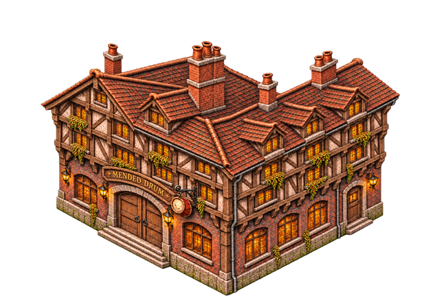
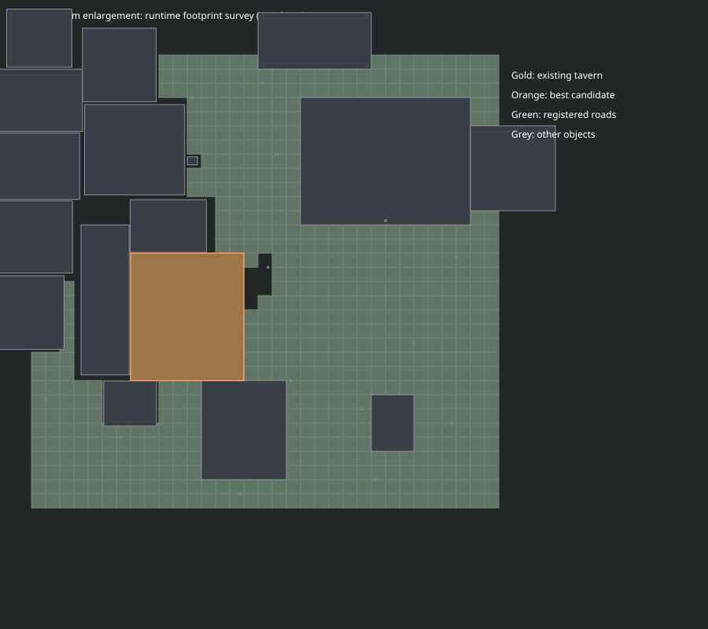

Current main

354.667 px canvas width
Registered larger tavern

643 px canvas; 476 px registered foundation width
Daytime art exported and checked. Both foundation slopes are 26.565°. Door height is 70 px at draw scale 0.5. The original plot needs a street/block redesign before this larger footprint can be installed.
Both assets below are at their intended game display size. Scroll sideways on narrow screens; the art is not shrunk to fit.
354.667 px canvas width

643 px canvas; 476 px registered foundation width
2× transparent WebP · Registration · Compositing review · QA and integration notes
132 nearby positions checked; none was clear of roads and buildings. Orange marks a candidate with conflicts. It is not a placement approval.
